Free · Open source · Works offlineمجاني · مفتوح المصدر · يعمل بدون إنترنت
Learn at your pace.
Prove you kept it.
تعلّم على راحتك.
وأثبت أنك التزمت.
inPace is a learning app that lives on your computer. Follow a course step by step, save signed milestones, and let a friend, parent or mentor check that you really did the work. inPace تطبيق تعلّم يعيش على جهازك. تابع دورة خطوة بخطوة، واحفظ محطات موقّعة، ودع صديقًا أو أحد والديك أو مرشدك يتأكد أنك أنجزت العمل فعلًا.
- latest versionأحدث إصدار
- downloadsتحميل
- visitsزيارة

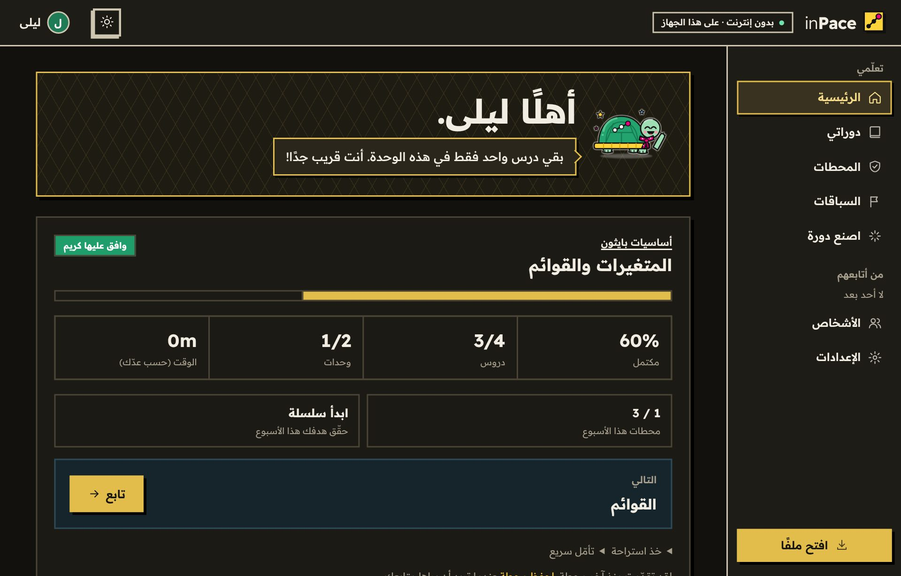

Slow and steady wins the race!ببطء وثبات تفوز بالسباق!
How it works.كيف يعمل.
-
01
Follow a courseتابع دورة
Read the lessons, do the tasks, pass the quizzes. Every course is a trail, and Tempo walks it with you.اقرأ الدروس، وأنجز المهام، واجتز الاختبارات. كل دورة طريق، ويمشيه معك Tempo.
-
02
Save a milestoneاحفظ محطة
A milestone is a signed snapshot of your progress. Each one links to the one before, so history can't be quietly rewritten.المحطة لقطة موقّعة من تقدّمك. كل محطة مرتبطة بالتي قبلها، فلا يمكن تغيير السجل في الخفاء.
-
03
Your checker approvesمتابِعك يوافق
Send the file to someone you trust. They open it in their inPace, see exactly what you did, and send back their approval.أرسل الملف لشخص تثق به. يفتحه في inPace عنده، ويرى ما فعلته بالضبط، ثم يرسل لك موافقته.
What happens behind the scenesما يحدث خلف الكواليس
- It's a tiny website on your computerموقع صغير على جهازك
- inPace starts a small server that only your own computer can reach, and shows it in its own app window. No account, no cloud.يشغّل inPace خادمًا صغيرًا لا يصل إليه إلا جهازك، ويعرضه في نافذة التطبيق الخاصة به. بدون حساب وبدون سحابة.
- Everything lives in one folderكل شيء في مجلد واحد
- Your history, courses, uploaded work and settings are saved in
Documents/inPace. Your own video folders stay where they are and are never copied.سجلك ودوراتك وأعمالك المرفوعة وإعداداتك محفوظة فيDocuments/inPace. ومجلدات الفيديو عندك تبقى في مكانها ولا تُنسخ أبدًا. - Your milestones are signedمحطاتك موقّعة
- Each one is signed with a key that never leaves your computer and linked to the one before. Change anything later and the signatures stop matching.كل محطة موقّعة بمفتاح لا يغادر جهازك، ومرتبطة بالتي قبلها. وأي تغيير لاحق يجعل التوقيعات لا تتطابق.
- Checking is just swapping linksالمتابعة مجرد تبادل روابط
- You send your progress as a link in any chat, your checker's app verifies every signature, and they send back a small approval link. Nothing goes through us.ترسل تقدّمك كرابط في أي محادثة، فيتحقق تطبيق متابِعك من كل توقيع، ثم يرسل لك رابط موافقة صغيرًا. لا يمر شيء عبرنا.
Read the full explanation of how inPace worksاقرأ الشرح الكامل لطريقة عمل inPace (بالإنجليزية)
Everything you need to keep going.كل ما تحتاجه لتستمر.
Your course is a trailدورتك طريق
Each lesson is a stepping stone. You always know where you are, what's next, and how close you are to the end of the module.كل درس حجر على الطريق. تعرف دائمًا أين أنت، وما التالي، وكم بقي على نهاية الوحدة.

Videos that remember where you stoppedفيديوهات تتذكر أين توقفت
Turn a folder of videos you already have into a course, or paste YouTube links. The player continues from the exact second you left, with speed, ±10 seconds and keyboard keys. Going somewhere without internet? Download a course's YouTube videos into your Downloads folder in the quality you choose, or point to the copies you already have.حوّل مجلد فيديوهات عندك إلى دورة، أو الصق روابط يوتيوب. يكمل المشغّل من الثانية التي توقفت عندها بالضبط، مع التحكم في السرعة، والتقديم والرجوع 10 ثوانٍ، ومفاتيح لوحة المفاتيح. ستكون بدون إنترنت؟ حمّل فيديوهات يوتيوب الخاصة بالدورة في مجلد التنزيلات بالجودة التي تختارها، أو دلّ inPace على النسخ الموجودة عندك.

Make a course from a book, a playlist or a topicاصنع دورة من كتاب أو قائمة تشغيل أو موضوع
Pick where to start and inPace writes the prompt for any AI chat. Attach your own book or files and they become part of the course: the AI is told their pages and chapters, so each lesson opens the right part. Or build it yourself: move things around, undo any change, and preview lessons as you write.اختر من أين تبدأ وسيكتب inPace الطلب لأي محادثة ذكاء اصطناعي. أرفق كتابك أو ملفاتك فتصبح جزءًا من الدورة: يعرف الذكاء الاصطناعي صفحاتها وفصولها، فيفتح كل درس الجزء الصحيح. أو ابنها بنفسك: انقل الأشياء، وتراجع عن أي تغيير، وعاين الدروس أثناء الكتابة.

Lessons that read wellدروس مريحة للقراءة
Clear text, colour-coded code with a Copy button, and a calm dark mode for late nights.نص واضح، وكود ملوّن مع زر نسخ، ووضع داكن هادئ للسهر.
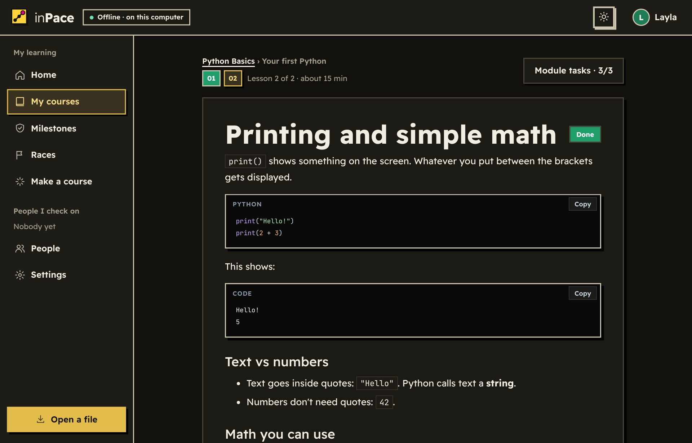
Turn a book into a courseحوّل كتابًا إلى دورة
Give inPace a PDF book. It reads the chapters and sections from the bookmarks: each chapter becomes a part of the course, and each section a lesson that opens only its own pages. Rename, reorder or leave out anything before you add it.أعطِ inPace كتابًا بصيغة PDF. يقرأ الفصول والأقسام من علاماته: كل فصل يصبح جزءًا من الدورة، وكل قسم درسًا يفتح صفحاته فقط. غيّر الأسماء أو الترتيب أو استبعد ما تريد قبل الإضافة.
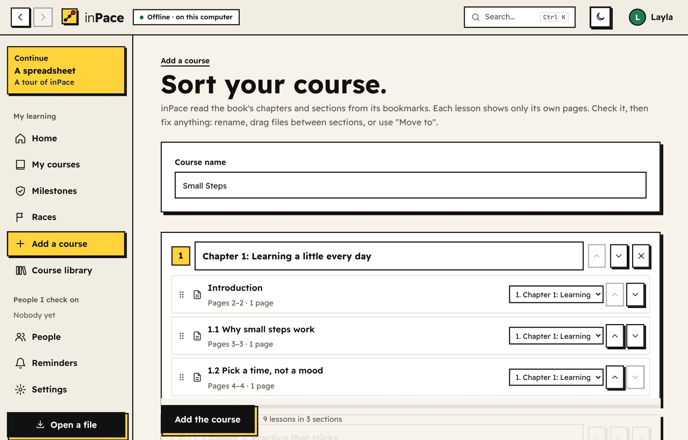
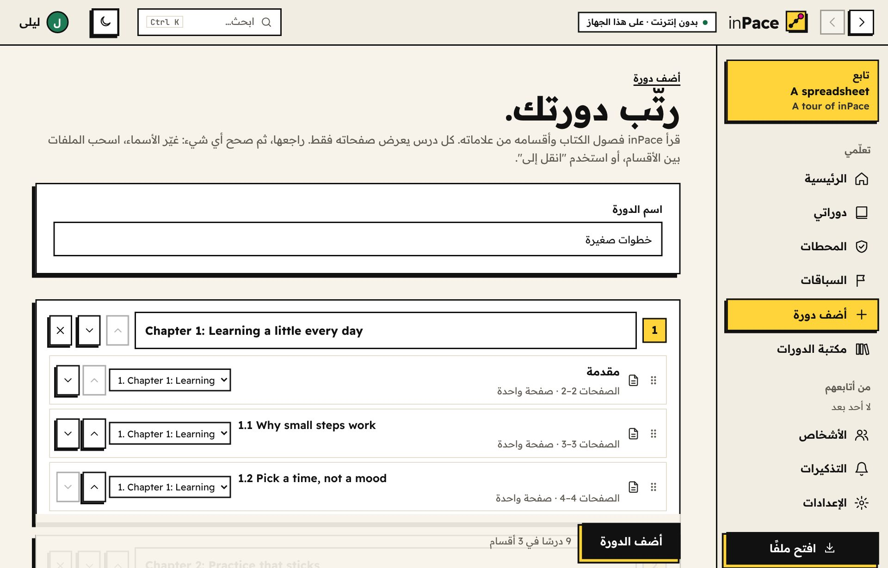
Read the book one part at a timeاقرأ الكتاب جزءًا جزءًا
A lesson can show a whole PDF or just pages 5 to 7. The built-in reader has zoom, full screen and page buttons, works offline, and remembers the page you stopped on in each part.يمكن أن يعرض الدرس ملف PDF كاملًا أو الصفحات من 5 إلى 7 فقط. القارئ المدمج فيه التكبير وملء الشاشة وأزرار الصفحات، ويعمل بدون إنترنت، ويتذكر الصفحة التي توقفت عندها في كل جزء.
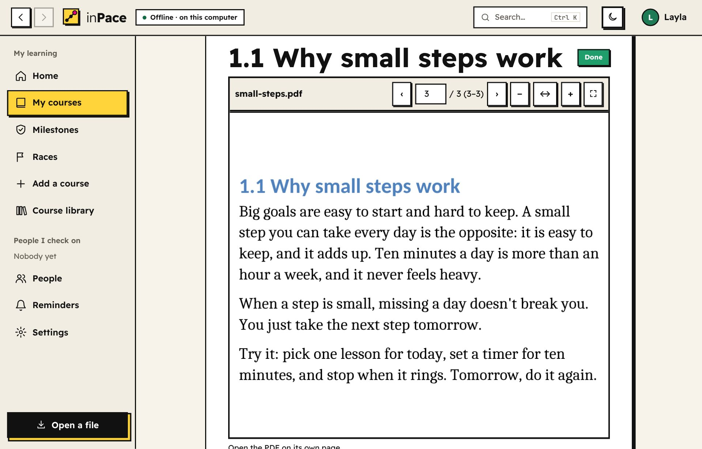
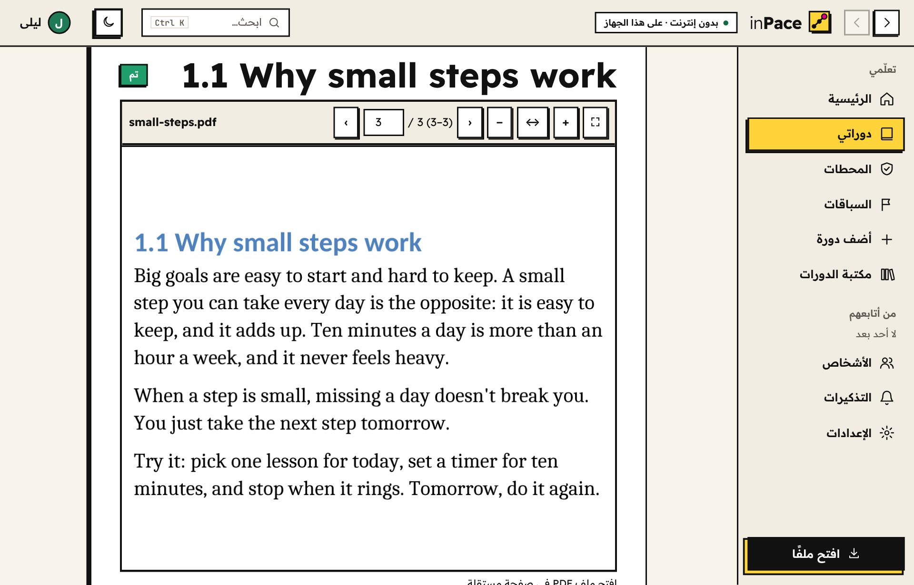
Word, PowerPoint and Excel files tooملفات Word وPowerPoint وExcel أيضًا
Class slides, notes and sheets open inside the lesson as a light preview: headings, lists, tables and pictures. Need to edit? One click opens the file in its own app. Nothing is sent anywhere.شرائح المحاضرات والملاحظات والجداول تفتح داخل الدرس كمعاينة خفيفة: العناوين والقوائم والجداول والصور. تريد التعديل؟ ضغطة واحدة تفتح الملف في تطبيقه. لا يُرسَل شيء لأي مكان.
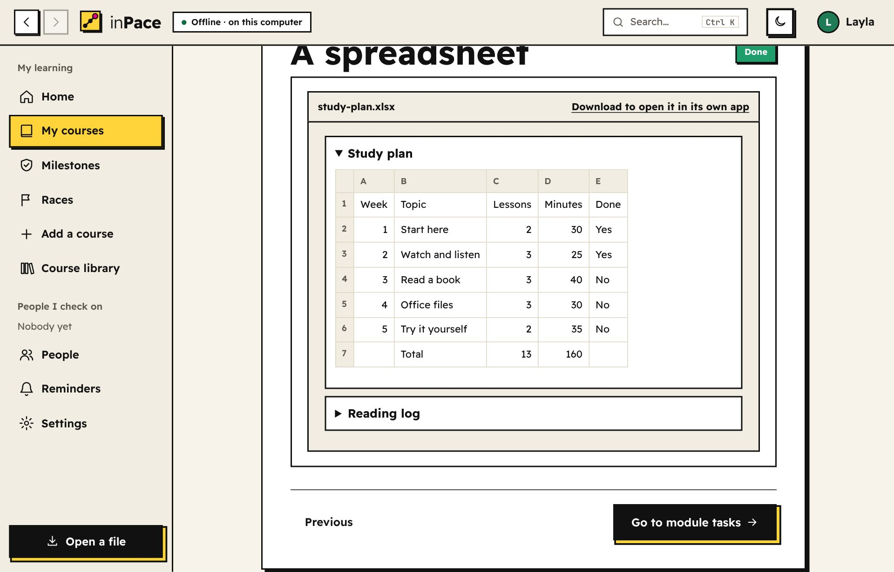
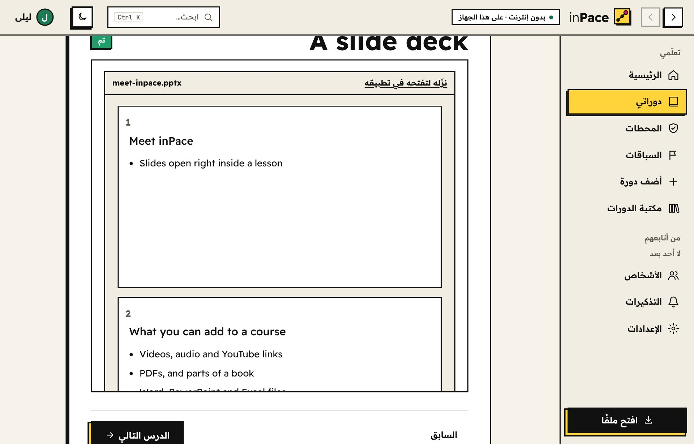
Jump anywhere in a secondانتقل لأي مكان في ثانية
Press Ctrl+K and type a few letters to open any lesson, course, task or person. The Continue card takes you back to where you were, and every lesson shows the whole course outline.اضغط Ctrl+K واكتب بضعة أحرف لتفتح أي درس أو دورة أو مهمة أو شخص. وبطاقة "تابع" تعيدك حيث كنت، وكل درس يعرض مخطط الدورة كاملًا.

Your courses, tidyدوراتك مرتّبة
Give each course a picture, see how far along you are, and find any course or lesson with a quick search. Got a newer version? See what changed and update it without losing your progress.أعطِ كل دورة صورة، واعرف أين وصلت فيها، واعثر على أي دورة أو درس ببحث سريع. وصلتك نسخة أحدث؟ شاهد ما تغيّر وحدّثها دون أن تفقد تقدّمك.
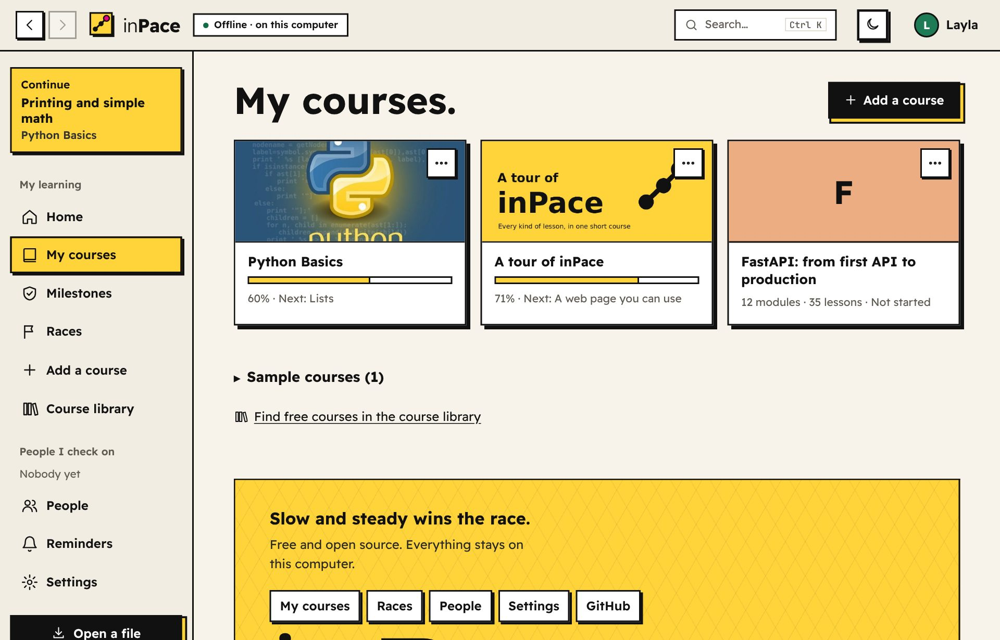
A library of free coursesمكتبة دورات مجانية
Add courses other learners made with one click, or publish your own. Every course is signed by its author, and a course link always brings your friend the newest version. Browse the library.أضف دورات صنعها متعلمون آخرون بضغطة، أو انشر دورتك. كل دورة موقّعة من صاحبها، ورابط الدورة يحضر لصديقك أحدث نسخة دائمًا. تصفّح المكتبة.
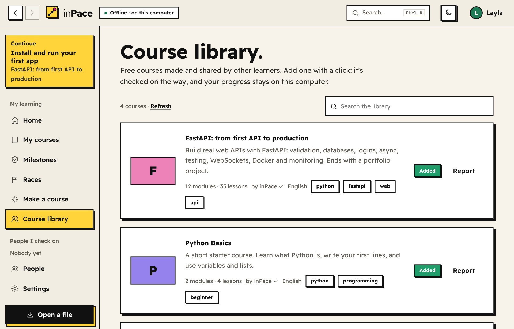
-
Friend linksروابط الأصدقاء
Send your link on Telegram, WhatsApp or email. Your friend taps it, inPace opens and adds you, and one tap sends theirs back. No accounts.أرسل رابطك على تيليجرام أو واتساب أو البريد. يضغطه صديقك فيفتح inPace ويضيفك، وبضغطة واحدة يرسل لك رابطه. بدون حسابات.
-
Races with friendsسباقات مع الأصدقاء
Race on weekly goals or course progress. Only approved milestones count, so it stays fair.تسابقوا على الأهداف الأسبوعية أو التقدّم في الدورة. تُحسب فقط المحطات الموافق عليها، فيبقى السباق عادلًا.
-
Verified examsاختبارات موثّقة
Your checker sends an exam shuffled just for you. You take it once, and only their app knows the answers.يرسل لك متابِعك اختبارًا مرتّبًا خصيصًا لك. تؤديه مرة واحدة، وتطبيقه فقط يعرف الإجابات.
-
A tour of every kind of lessonجولة في كل أنواع الدروس
The sample course "A tour of inPace" shows them all: video, audio, pictures, code, an interactive page, part of a book, slides, a Word file, a spreadsheet, tasks and a quiz. Add it from the home page.الدورة النموذجية «جولة في inPace» تعرضها كلها: فيديو وصوت وصور وكود وصفحة تفاعلية وجزء من كتاب وشرائح وملف Word وجدول وتمارين واختبار. أضفها من الصفحة الرئيسية.
-
Make a course with AIاصنع دورة بالذكاء الاصطناعي
Describe a topic, paste the answer from any AI chat, and inPace turns it into a course. Or build one by hand.صِف موضوعًا، والصق الرد من أي محادثة ذكاء اصطناعي، وسيحوّله inPace إلى دورة. أو اصنعها بنفسك.
-
Weekly goals and breaksأهداف أسبوعية واستراحات
Set how many milestones a week you'll save. Take a planned break, and your streak survives.حدّد عدد المحطات التي ستحفظها كل أسبوع. خذ استراحة مخططة، وتبقى سلسلتك.
-
A record anyone can checkسجل يمكن لأي شخص التحقق منه
Share one web page with your whole learning history. It checks its own signatures, right in the browser.شارك صفحة ويب واحدة فيها كل رحلة تعلّمك. تفحص توقيعاتها بنفسها داخل المتصفح.
-
Your colorsألوانك
Pick one of seven color profiles for the whole app, from sunny yellow to Nile teal. Each has its own light and dark shades.اختر واحدًا من سبعة أنماط ألوان للتطبيق كله، من الأصفر المشمس إلى أزرق النيل. ولكل نمط درجاته الفاتحة والداكنة.

Your data never leaves your computer.بياناتك لا تغادر جهازك أبدًا.
No account, no server, no tracking. inPace only talks to the internet for things you turn on: automatic updates, the AI course maker, or an online video you press play on. Files go to other people only when you send them yourself.بدون حساب، وبدون خادم، وبدون تتبّع. لا يتصل inPace بالإنترنت إلا لما تفعّله أنت: التحديثات التلقائية، أو صانع الدورات بالذكاء الاصطناعي، أو فيديو على الإنترنت تضغط تشغيله. ولا تصل ملفاتك لأحد إلا إذا أرسلتها بنفسك.
English and Arabicبالعربية والإنجليزية
The whole app works right to left in Arabic, with a font made for both languages and an Arabic starter course.التطبيق كله يعمل من اليمين لليسار بالعربية، بخط مصمم للغتين، ومع دورة عربية للبداية.
Reminders that actually ringتذكيرات ترنّ فعلًا
Pick your study times. Each reminder is a notification or an alarm that rings until you stop it or snooze it, on your computer and your phone, even when inPace is closed. Tempo nudges you too, with his face on the notification: when he misses you after a week away, when your weekly goal is at risk, when it's time to review, and when the fog reaches your island.اختر أوقات مذاكرتك. كل تذكير إشعار أو منبّه يرنّ حتى توقفه أو تؤجله، على الكمبيوتر والهاتف، حتى لو كان inPace مغلقًا. وينبّهك تمبو أيضًا، ووجهه على الإشعار: عندما يشتاق إليك بعد أسبوع غياب، وعندما يكون هدفك الأسبوعي في خطر، وعندما يحين وقت المراجعة، وعندما يصل الضباب إلى جزيرتك.
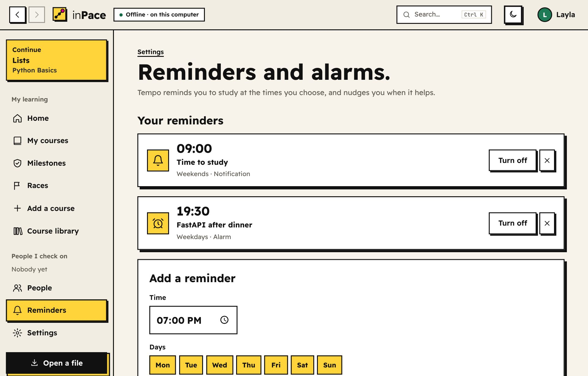
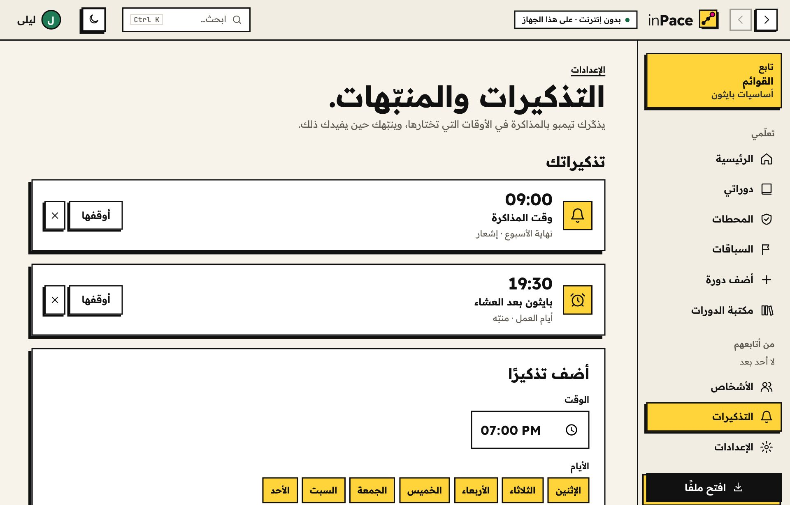
Tempo's island: a reward with a storyجزيرة تمبو: مكافأة لها قصة
Turn on reward mode and Tempo carries an island on his shell. Every focus trip grows a plant on it, from 14 kinds. Lessons, reviews, milestones and races bring 8 animal friends to live there. Your courses pay off too: each one hides treasure chests of shells, and a trophy when you finish it.شغّل وضع المكافآت فيحمل تمبو جزيرة على صدفته. كل رحلة تركيز تنمّي عليها نبتة من 14 نوعًا. والدروس والمراجعات والمحطات والسباقات تجلب 8 أصدقاء من الحيوانات ليعيشوا هناك. ودوراتك تكافئك أيضًا: في كل دورة صناديق كنز من الأصداف، وكأس حين تكملها.
And there's an adventure: ten chapters toward the Far Shore, against the Fog of Someday. It's a real threat: the longer you stay away, the closer it comes, and after 10 days your plants start to wilt. Every trip you finish waters them again.وهناك مغامرة: عشرة فصول نحو الشاطئ البعيد في مواجهة «ضباب بكرة». وهو تهديد حقيقي: كلما غبت اقترب، وبعد 10 أيام تبدأ نباتاتك في الذبول. وكل رحلة تكملها تسقيها من جديد.
Learning earns shells. Name your island and decorate it: beaches, snow, lanterns, a lighthouse. The sky follows your real clock, from dawn to starry night. Friends you add can see your island, and you can share a picture of it.التعلم يكسبك أصدافًا. سمِّ جزيرتك وزيّنها: شواطئ وثلج وفوانيس ومنارة. والسماء تتبع ساعتك الحقيقية، من الفجر حتى ليل النجوم. ومن تضيفهم يرون جزيرتك، ويمكنك مشاركة صورة لها.
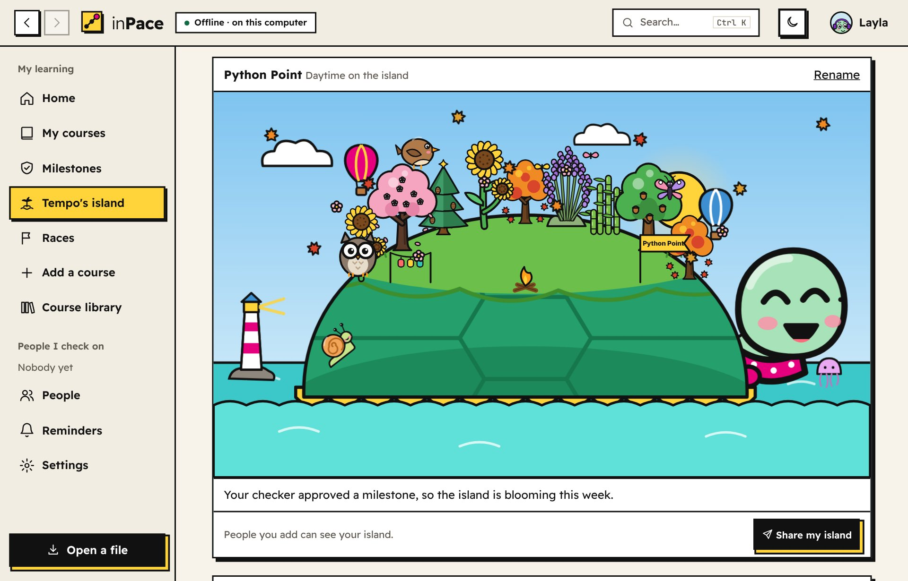
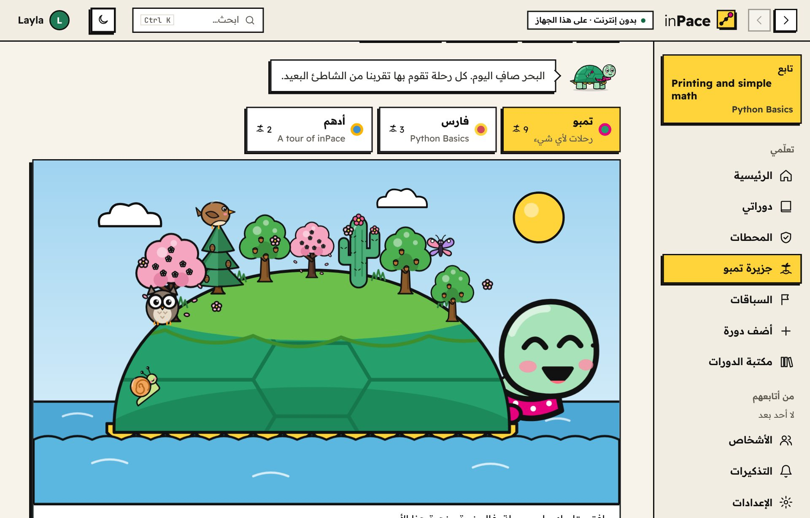
On your phone too.على هاتفك أيضًا.
The Android app is the whole of inPace, not a smaller version: the same courses, milestones, races and checkers. It runs completely on your phone, with no account and no internet needed.تطبيق أندرويد هو inPace كاملًا، لا نسخة مصغّرة: الدورات نفسها والمحطات والسباقات والمتابِعون. يعمل كله على هاتفك، بلا حساب ولا حاجة للإنترنت.
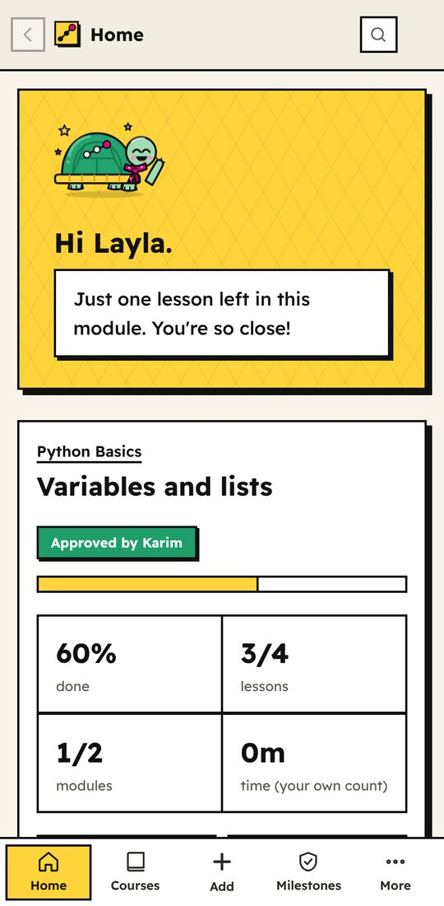
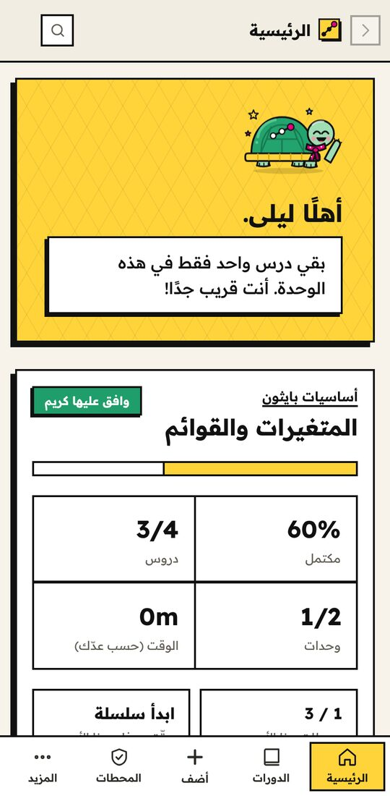
Pick up where you left offأكمل من حيث توقفت The tab bar always shows where you are.شريط الأسفل يوضح دائمًا أين أنت.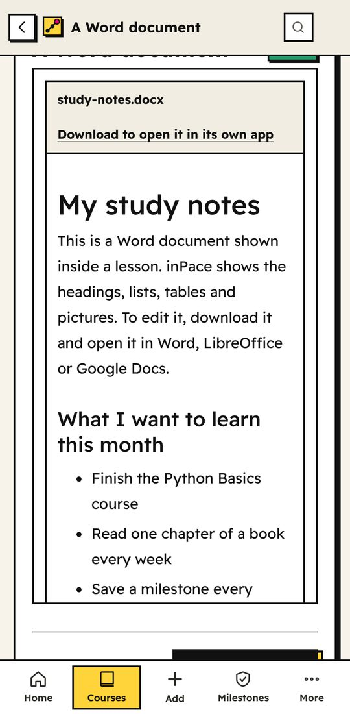
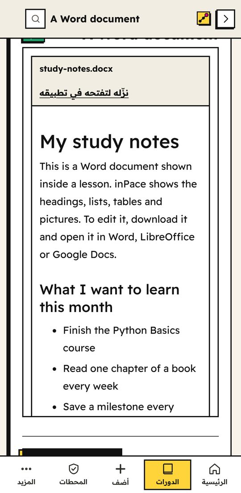
Read, watch, practiseاقرأ وشاهد وتدرّب Videos, books, slides, Word files and code fit the screen.الفيديوهات والكتب والشرائح وملفات Word والكود تناسب الشاشة.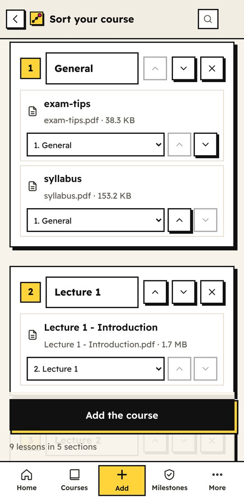
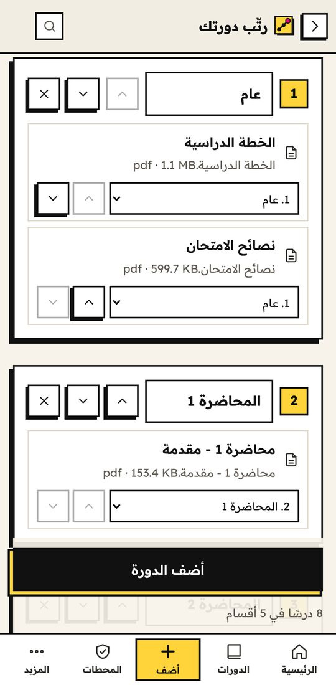
Sort your class materialرتّب مادتك الدراسية Pick a folder or some files; inPace sorts them by lecture or week.اختر مجلدًا أو ملفات، ويرتبها inPace حسب المحاضرة أو الأسبوع.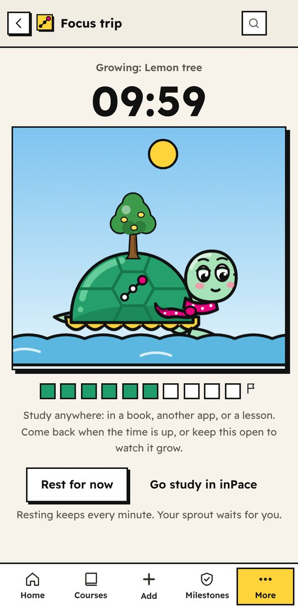
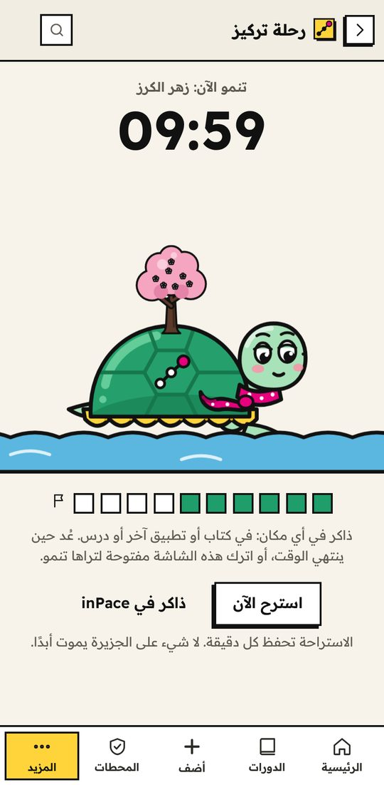
Focus, and watch it growركّز وشاهدها تنمو Put the phone down. Your plant grows while you study.ضع الهاتف جانبًا. تنمو نبتتك بينما تذاكر.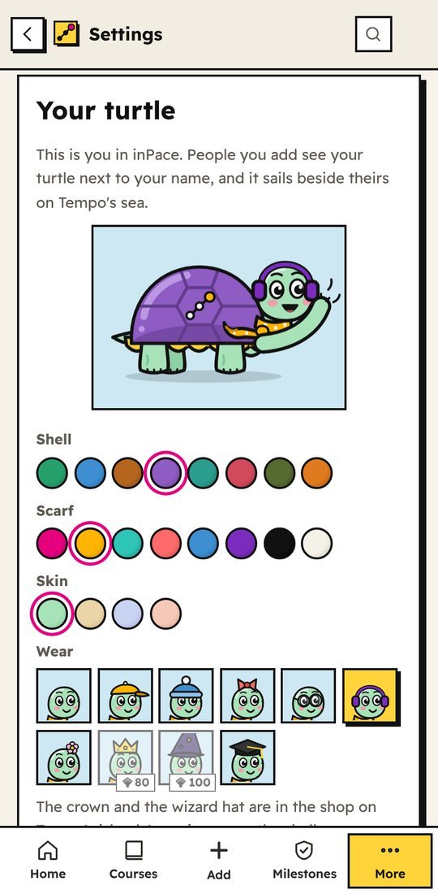
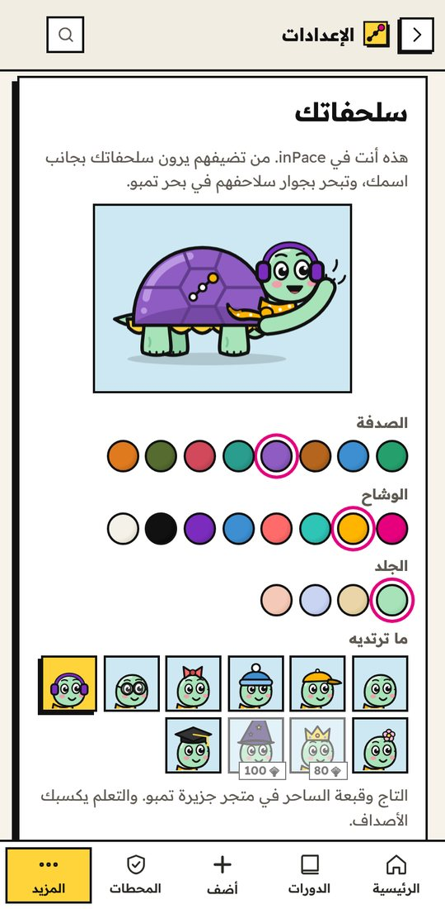
Make your own turtleاصنع سلحفاتك Your picture in inPace, on your contact card, and to share anywhere.صورتك في inPace، وعلى بطاقة التواصل، ولتشاركها في أي مكان.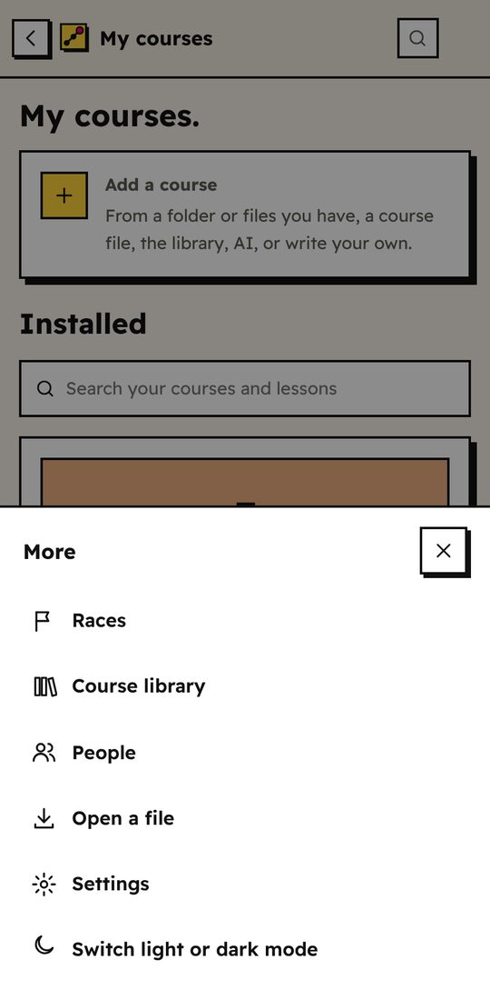
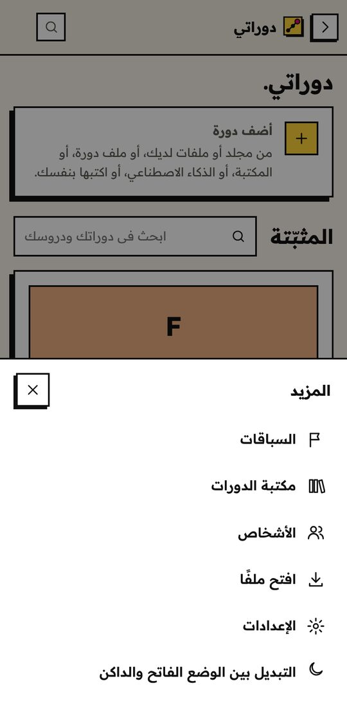
Everything else in one tapكل شيء آخر بلمسة Races, the library, people and settings live under More.السباقات والمكتبة والأشخاص والإعدادات تحت «المزيد».
- Share from any appشارك من أي تطبيق
- Send your progress to your checker on WhatsApp or Telegram, and inPace links open straight in the app.أرسل تقدمك لمتابِعك على واتساب أو تيليجرام، وروابط inPace تفتح مباشرة في التطبيق.
- Big video coursesدورات الفيديو الكبيرة
- Videos can stay where they are on your phone. inPace only asks for file access when you choose a folder.يمكن أن تبقى الفيديوهات في مكانها على هاتفك. يطلب inPace إذن الملفات فقط عندما تختار مجلدًا.
- Move between phone and computerانتقل بين الهاتف والكمبيوتر
- Make a backup on one and restore it on the other. Your history, key and courses come with it.اصنع نسخة احتياطية على أحدهما واستعدها على الآخر. ينتقل سجلك ومفتاحك ودوراتك معها.
- Reminders and alarmsتذكيرات ومنبّهات
- Pick your study times. A reminder or an alarm arrives even when inPace is closed, and Tempo nudges you if you've been away for a week.اختر أوقات مذاكرتك. يصلك تذكير أو منبّه حتى لو كان inPace مغلقًا، وينبّهك تيمبو إذا غبت أسبوعًا.
- Updatingالتحديث
- Download the new version and tap Update. Your courses and progress stay.حمّل النسخة الجديدة واضغط تحديث. تبقى دوراتك وتقدمك.
Get it for Androidاحصل عليه لأندرويد Using inPace on a phoneاستخدام inPace على الهاتف
Download inPace.حمّل inPace.
Always the newest version. Free forever.دائمًا أحدث نسخة. مجاني للأبد.
-
Windows
Windows 10 or 11. Unzip, then double-click inPace.exe.ويندوز 10 أو 11. فك الضغط، ثم انقر مرتين على inPace.exe.
Download for Windowsحمّل لويندوز -
Mac
Apple Silicon (M1 or newer). Open it and drag inPace into Applications.معالجات Apple (M1 أو أحدث). افتحه واسحب inPace إلى التطبيقات.
Download for Macحمّل لماك -
Ubuntu / Debian
Double-click to install, then find inPace in your apps.انقر مرتين للتثبيت، ثم ستجد inPace بين تطبيقاتك.
Download .debحمّل ملف .deb -
Android newجديد
Android 7 or newer. Open the file, allow installing from this source if asked, then open inPace.أندرويد 7 أو أحدث. افتح الملف، واسمح بالتثبيت من هذا المصدر إذا طُلب منك، ثم افتح inPace.
Download for Androidحمّل لأندرويد -
Other Linuxلينكس آخر
Unpack it, then run inPace.فك الضغط، ثم شغّل inPace.
Download .tar.gzحمّل ملف .tar.gz
First time opening it?أول مرة تفتحه؟ The app isn't signed yet, so your computer may warn you once. Windows: click More info, then Run anyway. Mac: right-click inPace, then Open. التطبيق غير موقّع بعد، لذلك قد يحذّرك جهازك مرة واحدة. ويندوز: اضغط More info ثم Run anyway. ماك: انقر بالزر الأيمن على inPace ثم Open.
What's new in الجديد في
ملاحظات الإصدار مكتوبة بالإنجليزية.
Write a course in plain text.اكتب دورة بنص عادي.
A course is a short YAML file plus lessons in Markdown. Questions and answers live in separate files, so you can share a version without answers. Ask any AI to write one, or start from the community library.الدورة ملف YAML قصير مع دروس بصيغة Markdown. الأسئلة والإجابات في ملفات منفصلة، لتشارك نسخة بدون إجابات. اطلب من أي ذكاء اصطناعي أن يكتب واحدة، أو ابدأ من مكتبة الدورات المجتمعية.
title: Python Basics
modules:
- title: Your first Python
lessons:
- title: What is Python?
file: lessons/m1-l1.md
requires:
- type: practical
prompt: Print your name and 7 * 6.
- type: quiz
questions: [q1, q2, q3]
pass: 70